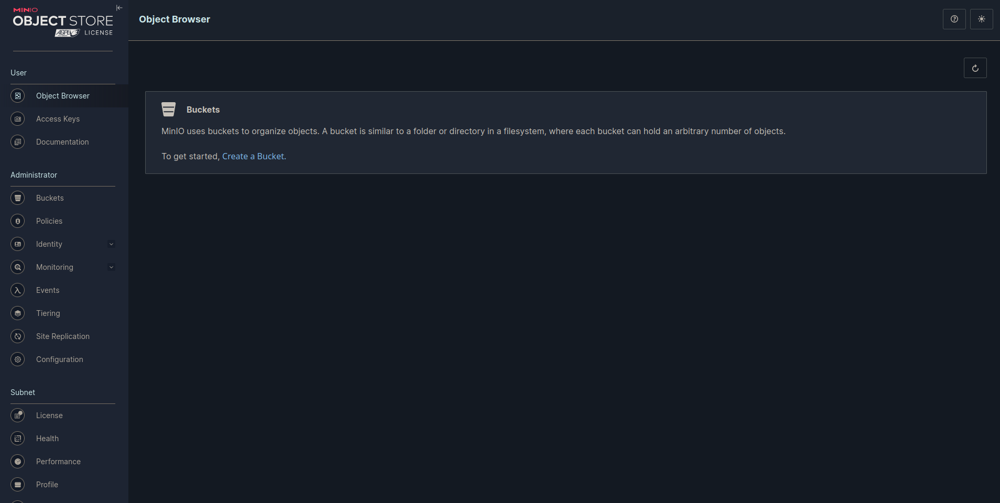

MinIO
MinIO S3 storage playbook
MinIO is a High-Performance Object Storage system released under GNU Affero General Public License v3.0. It is API compatible with the Amazon S3 cloud storage service. In a Multi-Node Multi-Drive (MNMD) or “Distributed” configuration, provides enterprise-grade performance, availability, and scalability and are the recommended topology for all production workloads.
MNMD deployments support erasure configurations which tolerate the loss of up to half the nodes or drives in the deployment while continuing to serve read operations.
1. Configure infrastructure
Choose how many servers you want to have in your cluster. It is recommended to have a minimum of 2 MinIO servers. In this example, we will use 4 servers distributed across all available locations. There are 3 locations in the EU: ["fsn1", "nbg1", "hel1"]. The number of servers and disks per VPS created will rotate around this list. Disks are auto-mounted, with a limit of 16 volumes per server.
Load balancing (LB) is also needed to route requests automatically to nodes in the deployment. A multi-node setup eliminates a single point of failure. For best practices, check the MinIO documentation.
2. Configure Minio, Nginx playbooks and Hosts
In your inventory/hosts file, specify the IP addresses of your newly created servers obtained from Terraform output, or alternatively, verify them in the Hetzner Cloud console
a) MinIO playbook config
MinIO requires using expansion notation {x...y} to denote a sequential series of MinIO hosts and volumes when creating a server pool. Other variables are self explanatory:
vars:
minio_server_cluster_nodes:
[
"https://minio{1...4}.ujstor.com:{{ minio_server_port }}/mnt/disk{1...4}/minio",
]
minio_server_port: "9091"
minio_console_port: "9092"
minio_root_user: "ujstor"
minio_root_password: "roottoor123"
minio_validate_certificate: true
minio_alias: "ujstorminio"
Another important aspect is defining the volumes per node that will have permissions for the MinIO user and group:
- name: Change ownership for /mnt/disk
become: true
become_user: root
ansible.builtin.file:
path: "{{ item }}"
owner: minio
group: minio
state: directory
with_items:
- /mnt/disk1
- /mnt/disk2
- /mnt/disk3
- /mnt/disk4
b) Preconfig playbook configuration
In the folder minio_config, there is a preconfig playbook. This playbook will create DNS mappings, rename default volume names created by Hetzner, and copy certificates to every node.
First, add hostnames and private IPs:
vars:
dns_mappings:
- hostname: "minio1.ujstor.com"
ip_address: "10.0.4.2"
- hostname: "minio2.ujstor.com"
ip_address: "10.0.4.3"
- hostname: "minio3.ujstor.com"
ip_address: "10.0.4.4"
- hostname: "minio4.ujstor.com"
ip_address: "10.0.4.5"
Next, navigate to the SSL directory and create a certificate with this command:
sudo ./certgen-linux-amd64 -host "10.0.4.2, 10.0.4.3, 10.0.4.4, 10.0.4.5, minio1.ujstor.com, minio2.ujstor.com, minio3.ujstor.com, minio4.ujstor.com" && sudo chmod 644 private.key
c) Configure Nginx lb
Nginx variables are pretty straightforward. You need private IPs from servers, ports for console and API defined in the MinIO playbook, and domains that you will register with your DNS provider.
vars:
minio_servers:
- 10.0.4.2
- 10.0.4.3
- 10.0.4.4
- 10.0.4.5
minio_port: 9091
console_port: 9092
console_domain: minio-console.ujstor.com
minio_domain: minio.ujstor.com
When the playbook is applied, we will create certificates for secure SSL connections using Certbot for the chosen domains.
3. Run playbooks
MinIO:
cd ansible
ansible-playbook playbooks/playbook_minio.yml
Expected output:
PLAY RECAP ********************************************************************************************************
128.140.0.112 : ok=46 changed=29 unreachable=0 failed=0 skipped=3 rescued=0 ignored=3
135.181.88.205 : ok=46 changed=29 unreachable=0 failed=0 skipped=3 rescued=0 ignored=3
49.13.73.3 : ok=51 changed=31 unreachable=0 failed=0 skipped=7 rescued=0 ignored=3
91.107.208.20 : ok=46 changed=29 unreachable=0 failed=0 skipped=3 rescued=0 ignored=3
Nginx:
ansible-playbook playbooks/playbook_nginx_minio_lb.yml
Expected output:
PLAY RECAP *******************************************************************************************************
49.13.86.88 : ok=29 changed=18 unreachable=0 failed=0 skipped=9 rescued=0 ignored=0
Complete terminal output is available in the public directory.
4. SSH into LB and configure ssl
Terraform creates SSH private and public keys that are added to Hetzner and servers. They are also used by Ansible. Be careful with keys, you don't want to lose them.
SSH into LB with the following command:
ssh root@49.13.86.88 -i ~/.ssh/minio_hetzner_key.pem
Install snap and create cert:
apt install snapd
snap install --classic certbot
certbot --nginx
5. Open UI and test S3 compatable API
MinIO UI is now available at https://minio-console.ujstor.com. Once you configure buckets and permissions, test the API on https://minio.ujstor.com.
Debugging
If there is an issue, you cant access the UI, SSH into one of the servers, and check the logs and systemctl status of the MinIO service
systemctl status minio.service
cat /var/log/syslog
If you see something like this, there is a high chance that volume permissions are not set correctly or there was a problem with the volume rename:
root@minio-2:~# systemctl status minio.service
● minio.service - MinIO
Loaded: loaded (/etc/systemd/system/minio.service; enabled; vendor preset: enabled)
Active: failed (Result: exit-code) since Thu 2024-03-14 22:13:37 UTC; 21min ago
Docs: https://docs.min.io
Process: 1062 ExecStartPre=/bin/bash -c if [ -z "${MINIO_VOLUMES}" ]; then echo "Variable MINIO_VOLUMES not set in /etc/minio/minio.conf"; exit 1; fi (code=exited, status=0/SUCCESS)
Process: 1063 ExecStart=/usr/local/bin/minio server $MINIO_OPTS $MINIO_VOLUMES (code=exited, status=1/FAILURE)
Main PID: 1063 (code=exited, status=1/FAILURE)
Mar 14 22:13:37 minio-2 systemd[1]: minio.service: Scheduled restart job, restart counter is at 5.
Mar 14 22:13:37 minio-2 systemd[1]: Stopped MinIO.
Mar 14 22:13:37 minio-2 systemd[1]: minio.service: Start request repeated too quickly.
Mar 14 22:13:37 minio-2 systemd[1]: minio.service: Failed with result 'exit-code'.
Mar 14 22:13:37 minio-2 systemd[1]: Failed to start MinIO.
Check /mnt/ to see if there are volumes named disk1-4. If they are present, run the MinIO playbook again from the 'Change ownership for /mnt/disk' task:
ansible-playbook playbooks/playbook_minio.yml --start-at-task="Change ownership for /mnt/disk"
This command can be executed manually on every node if you SSH into them:
chown -R minio:minio /mnt/disk{1,2,3,4}
Other common things that can go wrong is DNS resolving, so check /etc/hosts to see if dns_mapping is correst:
cat /etc/hosts
Output:
cat /etc/hosts
# Your system has configured 'manage_etc_hosts' as True.
# As a result, if you wish for changes to this file to persist
# then you will need to either
# a.) make changes to the master file in /etc/cloud/templates/hosts.debian.tmpl
# b.) change or remove the value of 'manage_etc_hosts' in
# /etc/cloud/cloud.cfg or cloud-config from user-data
#
127.0.1.1 minio-2 minio-2
127.0.0.1 localhost
# The following lines are desirable for IPv6 capable hosts
::1 localhost ip6-localhost ip6-loopback
ff02::1 ip6-allnodes
ff02::2 ip6-allrouters
10.0.4.2 minio1.ujstor.com
10.0.4.3 minio2.ujstor.com
10.0.4.4 minio3.ujstor.com
10.0.4.5 minio4.ujstor.com
Let's assume that everything is working fine. You now have a login UI. Use the username and password defined in the Minio playbook. Congratulations! Your personal S3-compatible storage is up and running, ready to use.
